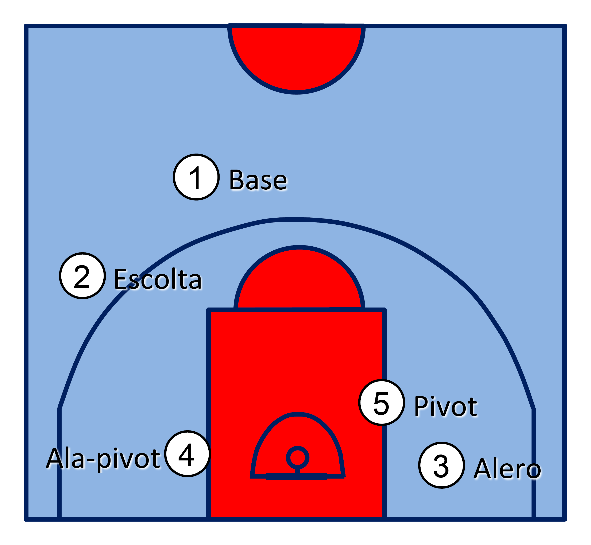
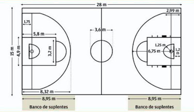
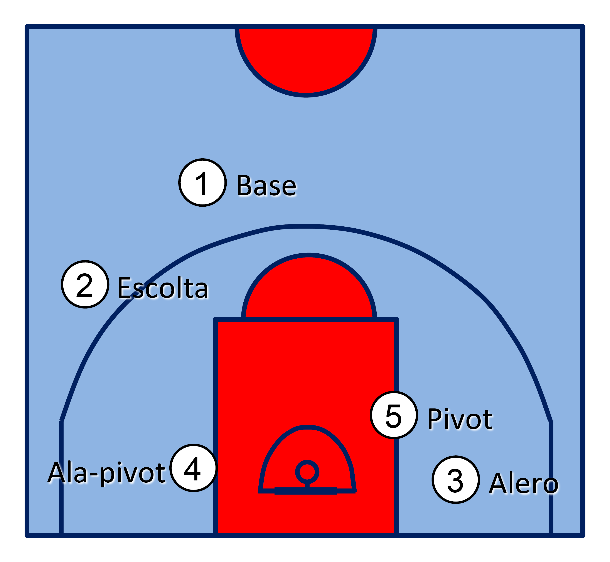
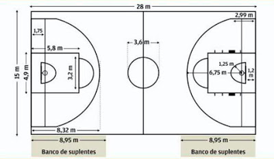

Historia del baloncesto
El baloncesto nació como una solución a la necesidad de realizar alguna actividad deportiva durante el invierno, en la escuela de la YMCA (Young Men's Christian Association) de Springfield, Massachusetts. En 1891, James Naismith, profesor de educación física en la escuela, el baloncesto se ideo como una actividad recreativa con una pelota basado en trece reglas. El juego se extendió por Estados Unidos, Canadá y el resto del mundo. Muchas de las reglas iniciales se mantienen hasta la actualidad, aunque algunos aspectos del juego tuvieron que modificarse para responder a desarrollos en la técnica de los jugadores y aspectos no previstos en el desarrollo del juego.
Posiciones de un equipo de baloncesto
Dentro del juego de baloncesto, se poseen las siguientes posiciones para situar a los jugadores: Base: También llamado playmaker ("creador de juego", "armador"). Normalmente el jugador más bajo del equipo es el base que significa que sube el balón y debe tener buen manejo del de este mismo, también tiene que tener buen manejo para el pase. En ataque sube la pelota hasta el campo contrario y dirige el juego ofensivo de su equipo, mandando el sistema de juego. Sus características recomendables son un buen manejo de balón, visión de juego, capacidad de dar buenos pases, buena velocidad y un acertado tiro exterior. En los bases son tan apreciadas las asistencias como los puntos anotados, aunque un buen jugador debe conseguir ambas cosas. En defensa han de dificultar la subida del balón del base contrario, tapar las líneas de pase y estar atento a recoger los rebotes largos. Normalmente estos jugadores no son de una elevada estatura, pues lo realmente importante es la capacidad organizativa y de dirección de juego. Conocidos como 1 en la terminología empleada por los entrenadores. Escolta: Jugador normalmente más bajo, rápido y ágil que el resto, exceptuando a veces el base. Debe aportar puntos al equipo, con un buen tiro incluyendo el tiro de tres puntos, un buen dominio del balón y una gran capacidad de entrar a canasta. Conocidos como 2 en la terminología empleada por los entrenadores. Alero: Es generalmente de una altura intermedia entre los jugadores interiores y los exteriores. Su juego está equilibrado entre la fuerza y el tiro. Es un puesto importante, por su capacidad de combinar altura con velocidad. En ataque debe ser buen tirador de tres puntos y saber culminar una entrada hasta debajo del tablero contrario, son piezas básicas en lanzar el contraataque y suelen culminar la mayoría de ellos. Conocidos como 3 en la terminología empleada por los entrenadores. Ala-Pívot: Es un rol más físico que el del alero, en muchos casos con un juego muy similar al pívot. Obtiene la mayoría de los puntos en el poste bajo, aunque algunos pueden llegar a convertirse en tiradores muy efectivos. Sirven de ayuda al pívot para impedir el juego interior del equipo contrario, y cierran el rebote. Conocidos como 4 en la terminología empleada por los entrenadores. Pívot: Suelen ser los jugadores de mayor altura del equipo, y los más fuertes muscularmente. Normalmente, el pívot debe usar su altura y su potencia jugando cerca del aro. Un pívot que conjunte fuerza con agilidad es una pieza fundamental para su equipo. Son los jugadores que más sorprenden a los aficionados noveles, por su gran altura. En Europa el pívot medio ha evolucionado más y es capaz de abrirse hacia afuera para tirar. En defensa buscan recoger el rebote corto, impedir el juego interior del equipo contrario y taponar las entradas de jugadores exteriores. Conocidos como 5 en la terminología empleada por los entrenadores.
Características de la cancha, la canasta y el balón
La cancha
El baloncesto se juega por lo general en una cancha cubierta, pero también se practica al aire libre como actividad recreativa. La superficie debe ser plana, rectangular y libre de obstáculos. Las dimensiones varían según el país o las reglas. Las medidas reglamentarias de la FIBA son 28 m de largo por 15 m de ancho. En los Estados Unidos, las ligas profesionales se juegan en pistas de 28,65 m de largo por 15,24 m de ancho, pero en las escuelas la longitud de la cancha es menor, 25,60 m.Las canchas cubiertas suelen estar revestidas por las líneas de banda y las líneas de fondo que, al igual que todas las líneas de la superficie de juego, miden 5 cm de ancho. El perímetro debe estar libre de obstrucciones hasta los dos metros de distancia. La línea de medio campo divide la cancha en dos mitades y parte un círculo central de 3,6 m de diámetro.Para cada equipo, el medio campo que contiene la canasta que se defiende se denomina medio campo defensivo y el medio campo que contiene la canasta en la que se pretende anotar se denomina medio campo ofensivo. En los extremos de la pista se sitúan los aros a 3,05 m de altura y adentrados 1,20 m dentro del campo de juego. La línea de tiro libre, se traza paralela a las líneas de fondo, a 5,80 m de esta y a 4,60 m de la canasta. Un círculo de 3,6 m de diámetro rodea la línea de tiro libre. La zona restringida comprende el área de 4,9 m de anchura entre las líneas de fondo y de tiro libre. Según el reglamento de la FIBA en vigor desde octubre de 2010, la línea de tres puntos se encuentra situada a 6,75 m de distancia de la canasta, un valor intermedio entre el usado anteriormente en la NBA (7,24 m) y en Europa (6,25 m). Las nuevas reglas definen también un semicírculo de 1,25 m de radio bajo la canasta, en el que la carga ofensiva no se considera falta.
El balón
Balón oficial de la FIBA en la temporada 2004-2005 El balón de básquetbol es esférico. Puede estar hecho de diferentes materiales según se vaya a utilizar en canchas cubiertas o al aire libre. Normalmente los balones se fabrican en cuero, caucho o en materiales sintéticos. Para evitar que resbalen de las manos sudadas, presentan 9366 puntos que sobresalen de la superficie. Los balones tradicionales son de color naranja con líneas negras, pero pueden ser de otros colores para mejorar la visibilidad de la pelota tanto por parte de los jugadores como por el público. Se utilizan balones de tres denominaciones correspondientes a tres tamaños y pesos diferentes según las categorías: el número 7 A (74-76 cm;610-567 g) utilizado para básquet masculino, el 6 A (73-72 cm; 567-510 g) para baloncesto femenino y el 5 A (70-69 cm; 510-470 g) para las categorías júnior. Además, se estipula que el balón ha de tener una presión tal que soltado desde 1,80 m de altura, bote entre 1,20 y 1,40 m de altura.
La canasta
El poste y la canasta con medidas oficiales Las canastas se sitúan a ambos extremos de la cancha. El tablero que sostiene la canasta es un rectángulo de 1,05 × 1,8 m, con un grosor no inferior a los 30 mm y anclado al suelo por una base protegida. El aro de la canasta está situado a una altura de 3,05 m y debe tener un diámetro de 45 cm; sujeta por doce bucles del aro, pende una red cuyo diámetro disminuye gradualmente, utilizada para que el balón no salga a gran velocidad tras un enceste. Por encima de la canasta, en la parte inferior del tablero hay un rectángulo pintado de 59 cm x 45 cm que sirve para calcular el tiro.